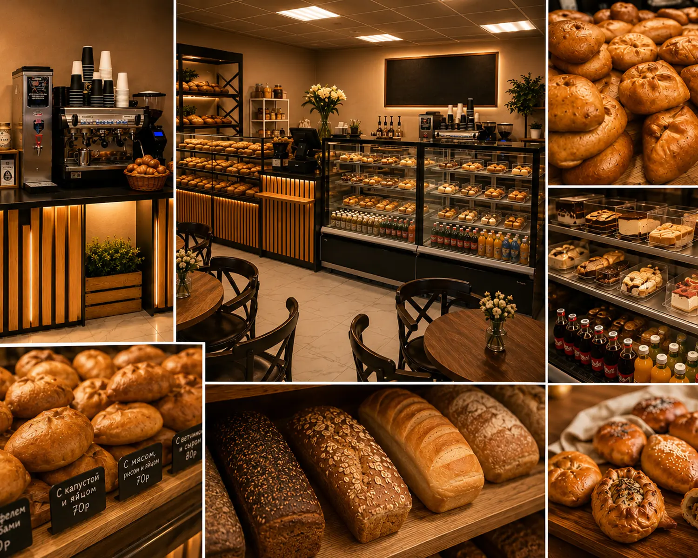

Выпекаем сами
Полный цикл в собственной пекарне
Выпекаем в своей пекарне по традиционным русским рецептам. Сытные и сладкие пирожки, хлеб и большие пироги без заморозки.

аутентичная городская пирожковая
Полный цикл в собственной пекарне
Готовим по проверенным рецептам с привычным вкусом без лишних добавок
Много начинки в каждом пирожке, чтобы было действительно сытно
Испечём к семейному ужину, празднику или в офис к назначенному времени
Санкт-Петербург, переулок Антоненко, 5